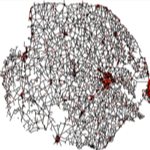

|  |
NorfolkBy Kurtis Garbutt |
The simulation starts by reading GIS data describing the road network of Norfolk The simulation randomly places agents on the roads and moves them around. When the agents reach an intersection they arbitrarily select a new road line segment to continue on.